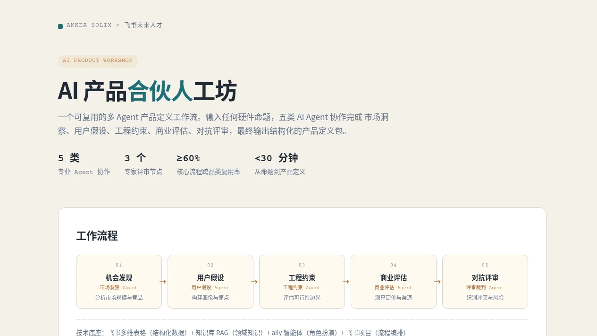
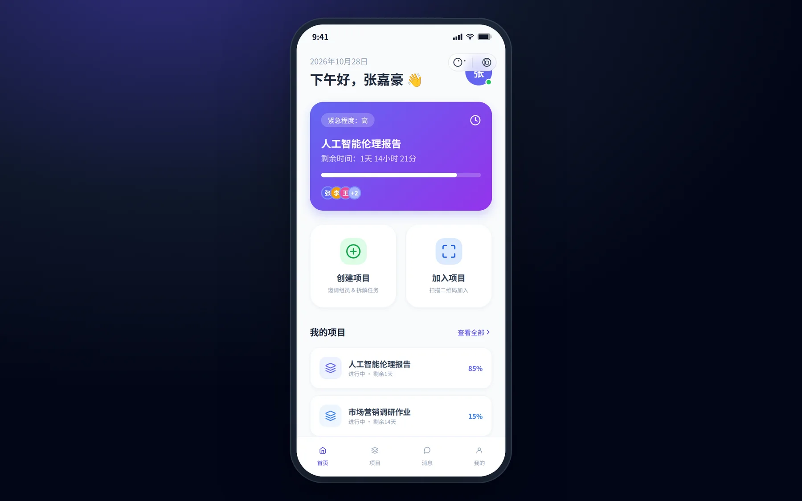
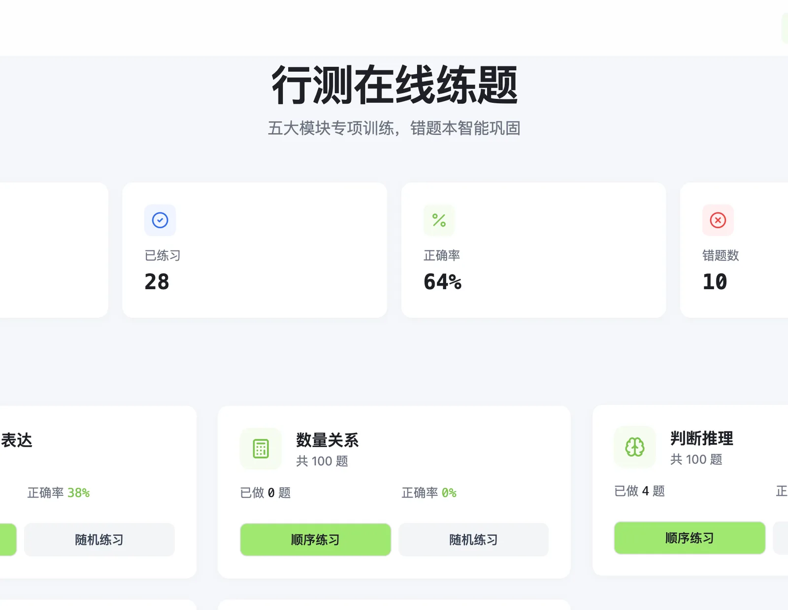
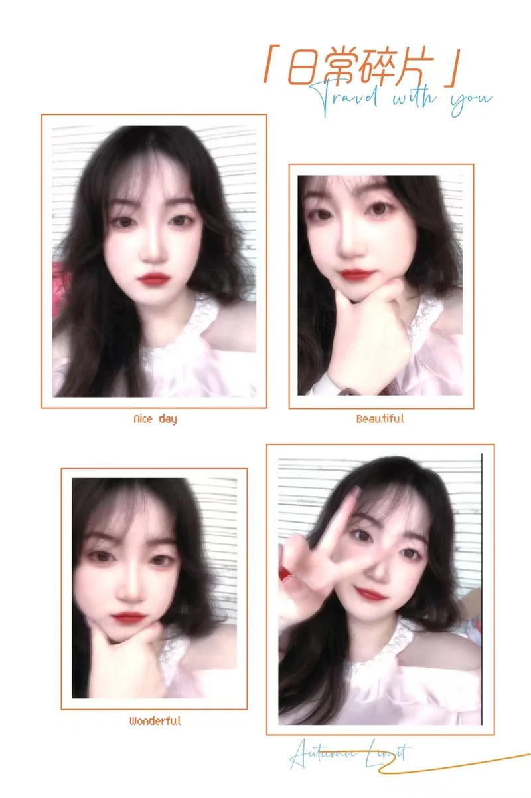
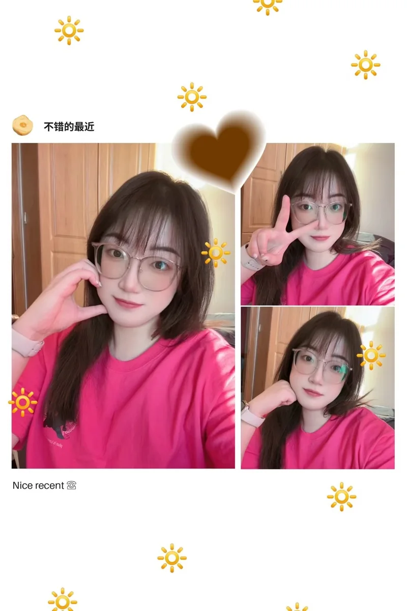
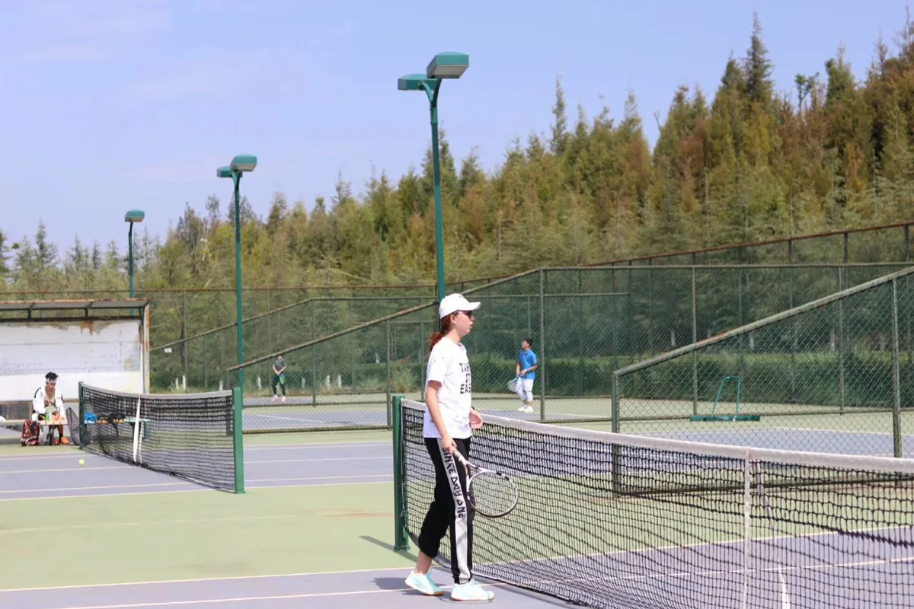
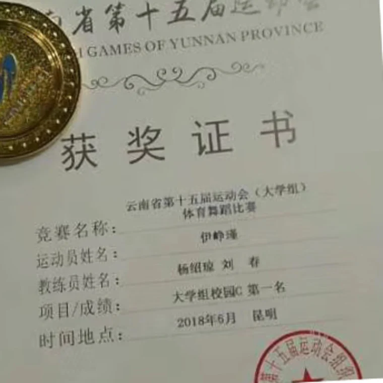

01 / 2026
AI 产品合伙人工坊
输入一个硬件命题，五类 Agent 产出可追溯的产品定义包。
01 SELECTED WORK
四个项目，四种把想法变成东西的方式。
点开卡片，看完整的判断过程，也可以直接上手玩。

输入一个硬件命题，五类 Agent 产出可追溯的产品定义包。

把“谁做什么、什么时候交”从群聊里捞出来。
一个人，把一段小说做成能看的剧。

给自己搭一个会记错、也会提醒你别再错的练习系统。
02 EVIDENCE
我不太擅长说“有较强的沟通能力”。
下面这些数字，是我更愿意拿出来的东西。
为公司节约成本
云南建投 · 项目经营数据模型
API 调用成本下降
小组作业 AI 管家 · 模板优先策略
标准化测试样张
石墨文档 PPT 首发 · UAT 体系
交互一致性矩阵
石墨文档 PPT · 竞品与跨端交互
协作 Agent 角色
AI 产品合伙人工坊 · 多 Agent
合同谈判与签订
云南建投 · 全生命周期管理
数字来自项目复盘与交付记录。它们不代表全部，但至少可以说明：我把事情做完了。
03 ABOUT
我做过三件看起来不相关的事：在企业里核成本，在咨询里拆组织，在 AI 里搭工作流。它们教会我同一件事——把模糊的东西，变成别人能执行的节点。
两年工程造价与成本合约管理，让我习惯先看数字，也要结合现场实际。
咨询项目里，我把模糊的人才诉求拆成可执行、可交付的工作节点。
现在，我用 AI 和产品，把这些节点变成能跑起来、能被验证的东西。


不工作的时候，我也长这样。
04 OFF THE CLOCK
生活不是简历的反面。
它是我练习好奇心、耐心和身体的地方。

大学网球社副社长。喜欢它的一点：每一分，只能靠下一拍解决。

云南省第十五届运动会（大学组）体育舞蹈比赛第一名。身体也需要被精确训练。
在陌生城市里走很久，观察别人怎么生活，也重新看自己。